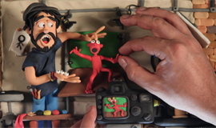

La rotoscopia es un tipo de stop motion que en estos años ha perdido popularidad y ya casi no se usa

Este estilo de animación consiste en redibujar acciones ya hechas por una persona real.Al igual que el stop motion consiste en dibujar fotograma a fotograma la diferencia es que aquí se dibuja en un calco hecho por una persona para así conseguir un toque más natural. Disney usó este estilo en algunas películas como blancanieves tambien hay películas hechas con este estilo que es bastante largo un ejemplo sería “Una mirada a la oscuridad” que en su totalidad está hecha por rotoscopia

Volver a la página principal

Volver a la anterior